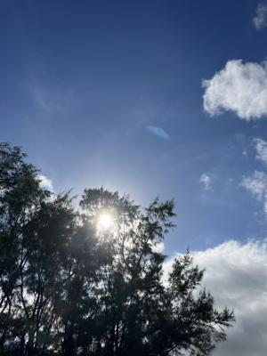
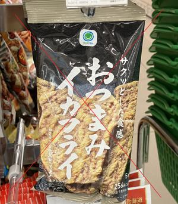
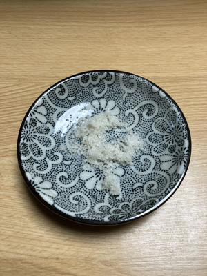

うるがいの話 ある日
最新: 給食【うるがいの話 ある日】とは 一日だけのプログです
『うるがいの話』の最新一日だけのプログで、通信料が少なく経済的だ。カニの画像をクリックすると全ての日付が載る『うるがいの話』サイトを表示します
|
|
【うるがいの話】 うるがい(ｳﾙｶﾞｲ urugai)とは、『もずくがに』の名前でとても大きくなります。 |
|---|---|
|
|
【カミマヤーの話】 猫のことを方言でマヤーといいます。カミマヤー（kamimayaa）とは、神の猫のことです。 |
|
【たながぁの音楽】 たながぁ（ﾀﾅｶﾞｰ tanagaa）とは手長えびのことで、何種類かあり大きいのは車 エビぐらいになります。 |

|
【ぶながぁの話】 ぶながぁ(ﾌﾞﾅｶﾞｰ bunagaa)とは、赤い髪の毛、赤い身体、そして身長は１ｍ２０ｃｍ ぐらい、川の蟹を食べているの目撃された。場所は沖縄県国頭郡大宜味村のと ある村僕の隣近所に住んでいる爺さんから、聞いた話です。 |
|
|
【ギーマの話】 ギーマ(giima)とは、山原の里山に咲くスズランに似た、 花を付けます。実は食べられます、 気が付くと口の周りが紫になっています。 |
2024年07月31日 (水）給食
16:28
 
『水分少ないです、水を沢山とるように・・・』、え！、先生、この前から
水を２リットル飲むように努力していのですけど、『尿の色が濃いでしょう
』、確かに検尿のとき濃いと思った。『なかなかね、水分とるって皆さん苦
労しているようですよ、体質によるのでしょうが。それと血液検査から尿酸
値があがっています、薬を止めたと聞きましたが、服用した方がいいかもし
れないですね、内科の先生と調整してください。あとこの前の処方薬はもう
飲まなくていいです、次に腎臓が痛みがあった時に利用してください、１年
ぐらいは問題ないので。あとジョギングする場合は、走る前に水分をとって
下さい、皆さんトイレを心配しますが直ぐには尿にならないので』、はい。
ケルティックソルト：あんまり、塩辛くない

水分が足りないとはショックである。確かに２リットルはキツイので、目標
は果たしていないが。
７月３０日 ２．２リットル
７月２９日 １．８リットル
７月２８日 ２．２リットル
７月２７日 １．７リットル
７月２６日 １．６リットル
７月２５日 ２．０リットル
ジョギングで、大量に汗を出した後に水を大量に飲んでいるものの。なかな
か難しい、そして毎朝のコヒーとイカフライのお菓子を辞め、食事には牛乳
を飲む。そうか、給食のメニューだ、そして、梅干しも。エコー検査で、左
右の腎臓に３個に石があると先生が嬉しそうに言った。要望頑張るべ
１６時１８分 ビットコインの総資産 ￥２９、３２９（↓６８９）